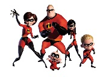

- They are a family of two parents and three children, Bob and Helen are the parents and Violet, Dash and Jack-jack are the children.
- Each of them hold super powers and live in a time where supers are shunned and rejected by society, requiring them to blend in.
- They are a fictional family from the movie series, "The Incredibles".